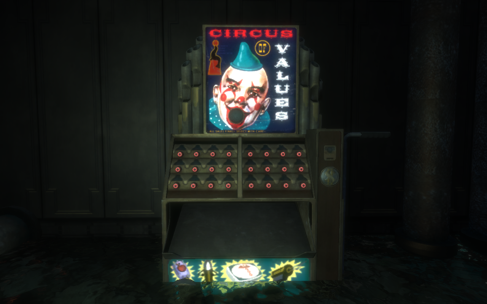
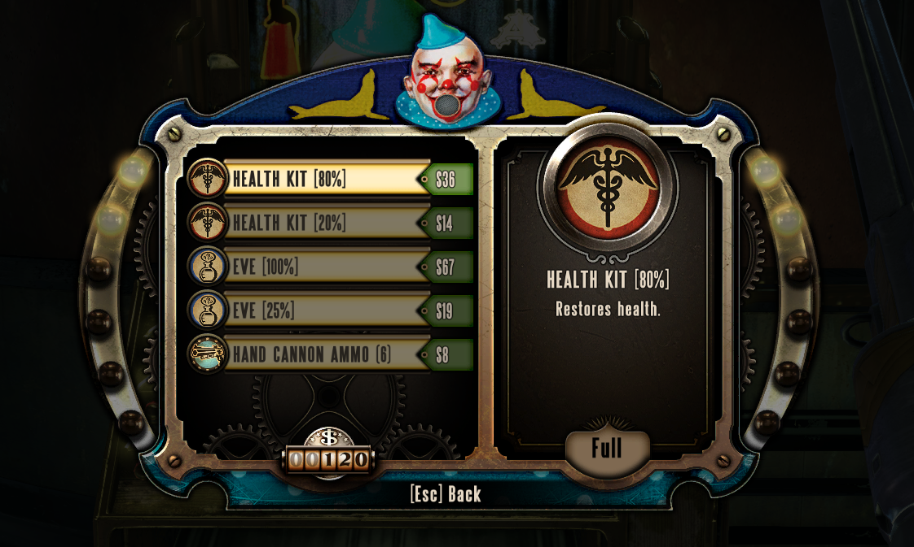

Hit the blue, red, and purple tonic bottles, depicted with faces at the top, to score a point each. Dodge the alcohol bottles or lose 5 points in the process. Hit the golden tonic for 5 points. If you miss, the clown will laugh at you. Click to start.
My concept for this game was based heavily on one of my favorite games called Bioshock. A very memorable element of the game is a vending machine called "The Circus of Values," which is how the protagonist gets all of his add-ons, these being called "tonics." I implemented the music and quirky dialogue from the clown, which adds a very creepy clown feel as you play. I selected two different colored tonics, red and blue, and made my own in purple. Throughout the game, the protagonist encounters bottles of alcohol that he can choose to drink or ignore. Drinking the alcohol, however, will make him lose a precious material called eve which ultimately effects him negatively. I implemented this into the game, making it so that if you hit one, you lose 5 points. As my special, I made a yellow tonic and programmed it to show up throughout the game. If you hit the yellow tonic, you gain 5 points instead of 1. Other than this, I also added some design elements, one being a ring around my moles as well as a smaller ellipse to fill in for the down state. To finish it off, I added my time on the top right hand corner as well as a hit and miss counter. I finish off the game with a quirky clown quote as a finishing touch.
For my audio, besides the music from Bioshock, I wanted to add more creepy sounds. I stuck with the creepy clown feel being that I thought it was fitting. To do this, I made it so that everytime the player hits a mole in the down state, the creepy clown would laugh. I also incorporated the alcohol drinking sound from the original Bioshock game as an added bit.
Overall, I am very pleased with my game. I think visually it is very cool looking, and the audio fits well with it. It reminds me so much of the creepy feel that Bioshock gave me when I played it years ago. Definitely happy with the finished result!
All credit for sounds and images taken from the Bioshock game goes to them!